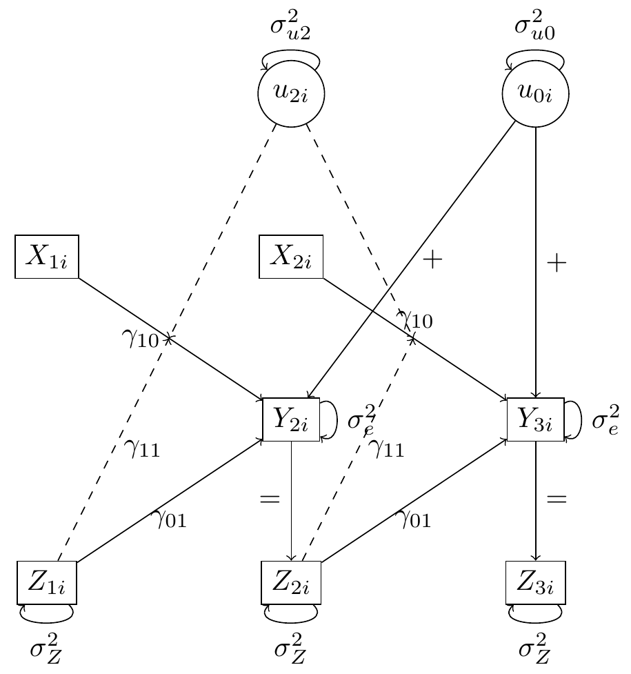
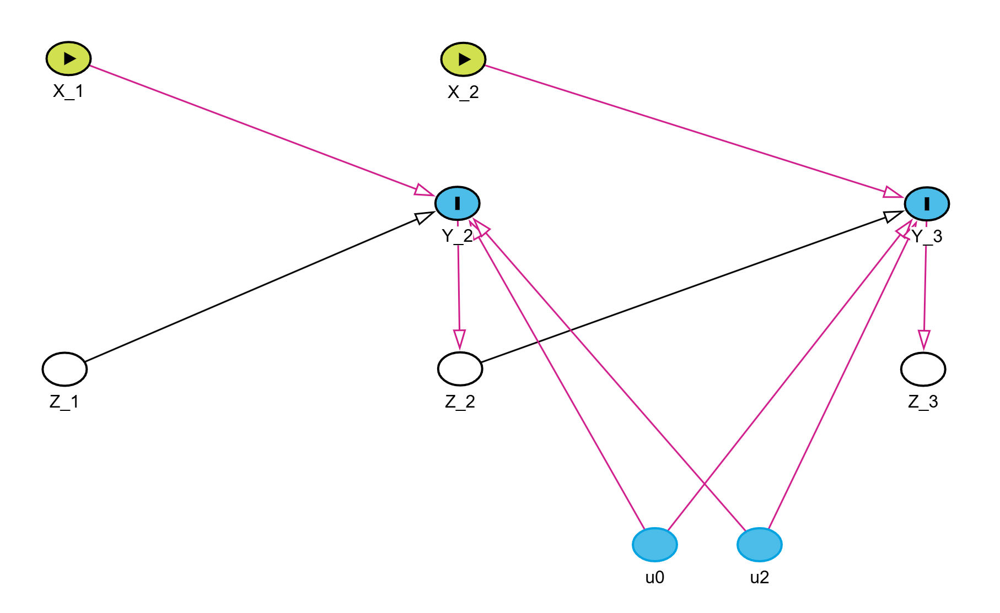

DGMs of Qian et al. (2020) - Part 2: With Treatment
1 Main Simulation of Qian et al. (2020): With Treatment
1.1 Original Section: “4. Simulation”
In the simulation, we considered three generative models (GMs), all of which have an endogenous covariate. In the first two GMs, the endogenous covariate \(X_{it}\) equals the previous outcome \(Y_{it}\) plus some random noise, so the conditional independence assumption (10) is valid. In GM 3, the endogenous covariate depends directly on \(b_i\), violating assumption (10). The details of the generative models are described below.
In GM1, we considered a simple case with only a random intercept and a random slope for \(A_{it}\), so that \(Z_{i(t_0)} = Z_{i(t_2)} = 1\) in model (7). The outcome is generated as:
\[ Y_{it+1} = \alpha_0 + \alpha_1 X_{it} + b_{i0} + A_{it} (\beta_0 + \beta_1 X_{it} + b_{i2}) + \epsilon_{it+1}. \]
The random effects \(b_{i0} \sim N(0, \sigma_{b0}^2)\) and \(b_{i2} \sim N(0, \sigma_{b2}^2)\) are independent of each other. The covariate is generated as \(X_{i1} \sim N(0, 1)\), and for \(t \geq 2\),
\[ X_{it} = Y_{it} + N(0, 1). \]
The randomization probability \(p_t\) is constant at \(1/2\). The exogenous noise is \(\epsilon_{it+1} \sim N(0, \sigma_\epsilon^2)\).
In GM2, we considered the case where \(Z_{i(t_0)} = Z_{i(t_2)} = 1\), with time-varying randomization probability. The outcome is generated as:
\[ Y_{it+1} = \alpha_0 + \alpha_1 X_{it} + b_{i0} + b_{i1} X_{it} + A_{it} (\beta_0 + \beta_1 X_{it} + b_{i2} + b_{i3} X_{it}) + \epsilon_{it+1}. \]
The random effects \(b_{ij} \sim N(0, \sigma_{b_j}^2)\), for \(0 \leq j \leq 3\), are independent of each other. The covariate is generated as \(X_{i1} \sim N(0, 1)\), and for \(t \geq 2\),
\[ X_{it} = Y_{it} + N(0, 1). \]
The randomization probability depends on \(X_{it}\):
\[ p_t = 0.7 \cdot 1(X_{it} > -1.27) + 0.3 \cdot 1(X_{it} \leq -1.27), \]
where \(1(\cdot)\) represents the indicator function, and the cutoff \(-1.27\) was chosen so that \(p_t\) equals 0.7 or 0.3 for about half of the time. The exogenous noise is \(\epsilon_{it+1} \sim N(0, \sigma_\epsilon^2)\).
GM3 is the same as GM 1, except that the covariate \(X_{it}\) depends directly on \(b_i\):
\[ X_{i1} \sim N(b_{i0}, 1), \quad X_{it} = Y_{it} + N(b_{i0}, 1) \text{ for } t \geq 2. \]
We chose the following parameter values:
\[ \alpha_0 = -2, \quad \alpha_1 = -0.3, \quad \beta_0 = 1, \quad \beta_1 = 0.3, \]
\[ \sigma_{b0}^2 = 4, \quad \sigma_{b1}^2 = \frac{1}{4}, \quad \sigma_{b2}^2 = 1, \quad \sigma_{b3}^2 = \frac{1}{4}, \quad \sigma_\epsilon^2 = 1. \]
2 Generative Model 1
2.1 Translation of Notation
In the table below, we will provide the translation of original notation in Qian et al. (2020) to notation more common in psychological research
| Parameter | Original | New |
|---|---|---|
| Fixed intercept | \(\alpha_0\) | \(\gamma_{00}\) |
| Fixed slope for \(X_{it}\) | \(\alpha_1\) | \(\gamma_{01}\) |
| Random intercept | \(b_{i0}\) | \(u_{0i}\) |
| Random slope for \(A_{it}\) | \(b_{i2}\) | \(u_{2i}\) |
| Error term | \(\epsilon_{it+1}\) | \(e_{it+1}\) |
| Fixed effect of \(A_{it}\) | \(\beta_0\) | \(\gamma_{10}\) |
| Interaction effect of \(A_{it}\) and \(X_{it}\) | \(\beta_1\) | \(\gamma_{11}\) |
| Covariate | \(X_{it}\) | \(Z_{it}\) |
| Randomized Treatment | \(A_{it}\) | \(X_{it}\) |
Let’s first state the original model:
\[ Y_{it+1} = \alpha_0 + \alpha_1 X_{it} + b_{i0} + A_{it} (\beta_0 + \beta_1 X_{it} + b_{i2}) + \epsilon_{it+1}. \]
Using this new notation, we may thus rewrite GM1 as a within model:
\[ Y_{it+1} = \beta_{0i} + \beta_{1i} X_{it} + e_{it+1}, \]
where:
\[ \beta_{0i} = \gamma_{00} + \gamma_{01} Z_{it} + u_{0i} \quad \text{with} \quad u_{0i} \sim \mathcal{N}(0, \sigma^2_{u0}), \]
\[ \beta_{1i} = \gamma_{10} + \gamma_{11} Z_{it} + u_{2i} \quad \text{with} \quad u_{2i} \sim \mathcal{N}(0, \sigma^2_{u2}). \]
Combining these two equations, the model can be expressed as:
\[ Y_{it+1} = \gamma_{00} + \gamma_{01} Z_{it} + u_{0i} + X_{it} (\gamma_{10} + \gamma_{11} Z_{it} + u_{2i}) + e_{it+1}. \]
More specifically, the process was generated as follows:
- the random effects \(u_{0i} \sim \mathcal{N}(0, 4)\) and \(u_{2i} \sim \mathcal{N}(0, 1)\) are independent of each other
- the covariate \(Z_{i1} \sim \mathcal{N}(0, 1)\), and for \(t \geq 2\), \(Z_{it} = Y_{it} + \mathcal{N}(0, 1)\)
- the randomization probability \(p_t\) is constant at 0.5
- the exogenous noise \(e_{it+1} \sim \mathcal{N}(0, 1)\)
- the parameter values are \(\gamma_{00} = -2\), \(\gamma_{01} = -0.3\), \(\gamma_{10} = 1\), \(\gamma_{11} = 0.3\)
2.2 Visualzing the Model
As mentioned by Ellen in the last meeting (17-10):
“Conventional DAGs do not only represent main effects but rather the combination of main effects and interactions. Once you have drawn your DAG, you already assume that any variables pointing to the same outcome can modify the effect of the others pointing to the same outcome.” (stackexchange)
So the DAG for the first couple observations, the DAG looks like

The red arrows here show the biased paths after controlling for the covariate \(Z_{it}\).
Or we can display it as a path diagram, where parameter values are displayed and moderation is shown by the dashed arrow.
We can make a couple observations
- Contrary to the DAG, this path diagram shows the moderation effect (1) of \(Z_{it}\) on the relationship between \(X_{it}\) and \(Y_{it+1}\) and (2) of \(u_{2i}\) on the relationship between \(Z_{it}\) and \(Y_{it+1}\).
- Similar to the example without treatment in section 2.2, the covariate \(Z_{it}\) is determined by the previous value of the outcome \(Y_{it}\)—which makes it an endogenous time-varying covariate.
The model is fitted as
gm1_mlm <- lmer(Y ~ Z * X + (1 + X| id), data = data)3 Generative Model 2
3.1 Translation of Notation
Now we need to translate more parameters:
| Parameter | Original | New |
|---|---|---|
| Fixed intercept | \(\alpha_0\) | \(\gamma_{00}\) |
| Fixed slope for \(X_{it}\) | \(\alpha_1\) | \(\gamma_{10}\) |
| Random intercept | \(b_{i0}\) | \(u_{0i}\) |
| Random slope for \(X_{it}\) | \(b_{i1}\) | \(u_{1i}\) |
| Fixed effect of \(A_{it}\) | \(\beta_0\) | \(\gamma_{20}\) |
| Interaction effect of \(A_{it}\) and \(X_{it}\) | \(\beta_1\) | \(\gamma_{30}\) |
| Random slope for \(A_{it}\) | \(b_{i2}\) | \(u_{2i}\) |
| Random interaction effect for \(A_{it} \times X_{it}\) | \(b_{i3}\) | \(u_{3i}\) |
| Error term | \(\epsilon_{it+1}\) | \(e_{it+1}\) |
| Covariate | \(X_{it}\) | \(Z_{it}\) |
| Treatment | \(A_{it}\) | \(X_{it}\) |
Let’s first restate the original model:
\[ Y_{it+1} = \alpha_0 + \alpha_1 X_{it} + b_{i0} + b_{i1} X_{it} + A_{it} (\beta_0 + \beta_1 X_{it} + b_{i2} + b_{i3} X_{it}) + \epsilon_{it+1}. \]
Using the psychological notation, we rewrite GM2 as a within-person model:
\[ Y_{it+1} = \beta_{0i} + \beta_{1i} Z_{it} + \beta_{2i} X_{it} + \beta_{3i} X_{it} Z_{it} + e_{it+1}, \]
with:
\[ \beta_{0i} = \gamma_{00} + u_{0i} \quad \text{where} \quad u_{0i} \sim \mathcal{N}(0, \sigma^2_{u0}), \]
\[ \beta_{1i} = \gamma_{10} + u_{1i} \quad \text{where} \quad u_{1i} \sim \mathcal{N}(0, \sigma^2_{u1}), \]
\[ \beta_{2i} = \gamma_{20} + u_{2i} \quad \text{where} \quad u_{2i} \sim \mathcal{N}(0, \sigma^2_{u2}), \]
\[ \beta_{3i} = \gamma_{30} + u_{3i} \quad \text{where} \quad u_{3i} \sim \mathcal{N}(0, \sigma^2_{u3}). \]
Combining these, the full model becomes:
\[ Y_{it+1} = (\gamma_{00} + u_{0i}) + (\gamma_{10} + u_{1i}) Z_{it} + (\gamma_{20} + u_{2i}) X_{it} + (\gamma_{30} + u_{3i}) X_{it} Z_{it} + e_{it+1}. \]
More specifically, the process was generated as follows:
3.2 Visualizing the Model
# #| label: GM2_visual
# #| cache: true
# #| fig-subcap:
# #| - "DAG"
# #| - "Path Diagram"
# #| layout-nrow: 2
# #| echo: false
#
# # GM2_DAG <- dagitty('dag{The model is fitted as
gm2_mlm <- lmer(Y ~ Z * X + (Z * X | id), data = data)4 Generative Model 3
4.1 Translation of Notation
…
4.2 Visualizing the Model
…